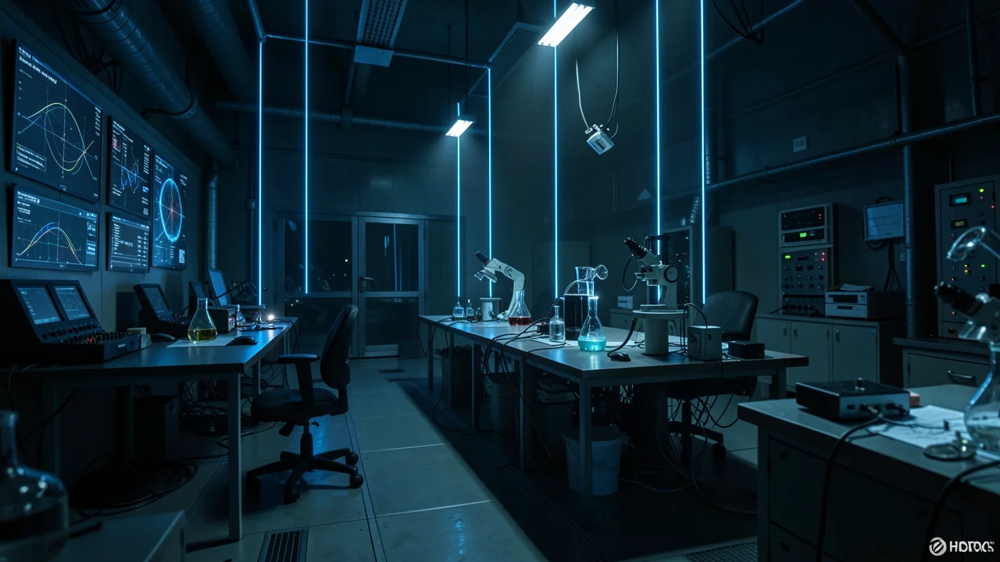

太陽質量の3倍の質量を持つ天体の魔法のような現象
AI生成コンテンツ：このページのテキスト、画像、その他のメディアは人工知能によって作成されており、誤りを含む可能性があります。
２つのブラックホールが衝突すると、その質量の一部が純粋なエネルギーの波として消滅し、私たちが実際にそれを感じることができます。

- Two black holes merged, leaving behind a single black hole.
- Three solar masses were converted directly into gravitational energy.
- Gravitational waves allow us to 'hear' cosmic events invisible to light.
- The event confirms the power of Einstein's mass-energy equivalence.
ルイジアナ州にある、とても静かで、とても豪華な部屋に座っている自分を想像してみてください。時は2015年。あなたは、ノイズと静寂だけが映し出される画面をじっと見つめています。突然、センサーがわずかに動きます。それは、通り過ぎるトラックの音でも、小さな地震の揺れでもありません。それは、現実の構造全体を震わせる、ごく小さな、微細な振動です。その振動は、あまりにも遠く離れた場所から発生しており、光でさえ、そこから私たちに届くまでに約13億年かかりました。これは、システムのバグではなく、宇宙が崩壊する音でした。

宇宙の消滅現象
2016年2月、LIGOの研究グループは衝撃的な発表を行った。彼らは、太陽の質量の約36倍と29倍という、非常に大きな2つのブラックホールが合体することを発表した。通常、物が合体するとき、その結果として得られるものの質量は、合体する前の物体の質量の合計と等しくなるはずだ。例えば、1ポンドの重さのものを2つ合体させれば、2ポンドになるはずだ。ただし、何か個人的な恨みを抱いている物理学者でない限り。
しかし、この宇宙規模の衝突では、奇妙なことが起こった。合体してできたブラックホールの質量は、太陽質量の約62倍だった。残りの太陽質量3倍はどこへ行ったのだろうか？それは、単に裏口からこっそり抜け出したわけでも、宇宙のタックスヘイブンに隠れたわけでもない。それは、アインシュタインの有名な式によって、純粋なエネルギーに変換されたのだ。 E＝mc² の公式そして、重力波として周囲へと広がっていく。
その融合反応によって、3つの太陽に匹敵する莫大なエネルギーが、ほんの一瞬にして放出された。
それは、太陽が3つ分に相当する物質が、時空に波紋を生じさせる形で変換されたことを意味します。具体的に言うと、ほんの一瞬、この合体は観測可能な宇宙にあるすべての星を合わせたよりも大きな出力を放ったのです。それと比較すると、超新星は取るに足らない花火のようです。

粒子だけではない、波紋
ここから、大きな、そして重い問いへと話が移ります。これは、波動と粒子の二重性を示す証拠となるのでしょうか？もしあなたが高校の物理の授業を受けたことがあるなら、光が波（空間を移動するもの）としても、また粒子（光子と呼ばれる離散的なエネルギーの塊）としても振る舞うという、理解するのが難しい概念を覚えているはずです。これは、亜原子世界の究極の「アイデンティティクライシス」と言えるでしょう。
私たちがこれから話すのは、 重力波ここで私たちが話しているのは、空間そのものの伸縮です。これは、文字通りの意味での波であり、ある媒体を通して伝わる擾乱です（ただし、ここでいう「媒体」とは、空間と時間そのものであり、これはやや哲学的な難題を孕んでいます）。
あなたの脳に問いかける「それで何だ？」
では、これは二重性の証拠なのでしょうか？ 事情は複雑です。この検出結果は、重力が波として伝わることを確認していますが、この方程式における「粒子」の側面、つまり理論上の「グラビトン」は、依然として科学界にとって最も捉えどころのない謎のままです。波は観測できますが、まだ粒子を捕らえることはできていません。私たちは本質的に、池の波紋を観察しているだけで、実際に単一の水の滴が独立して動くのを見たわけではありません。
なぜ、このことに興味を持つべきなのでしょうか？ なぜなら、これは単にブラックホールが劇的な現象であるという話だけではないからです。これらの波紋を理解することで、私たちは宇宙を実験室として利用できるようになります。私たちは、光を使って宇宙を「観察する」時代から、重力を使って宇宙を「聴く」時代へと移行しつつあります。それは、サイレント映画を見るのと、ヘヴィメタルコンサートに参加するのとの違いです。
重力波の検出 これにより、従来の望遠鏡では全く見ることができない現象を観察できるようになる。これは人類にとって新たな知覚能力だ。私たちはついに、宇宙の低周波の振動に耳を傾けることができるようになった。たとえ、宇宙がなぜ衝突時に太陽の質量の3倍もの物質を捨ててしまうのか、まだ完全に説明できなくても。
次に、人生が少し不安定だと感じたときは、こう思い出してほしい。少なくとも、あなたは宇宙のさざなみに自分の存在の太陽質量の3倍を失っているブラックホールではないのだから。
出典
もしかしたら、これも気に入るかもしれません。